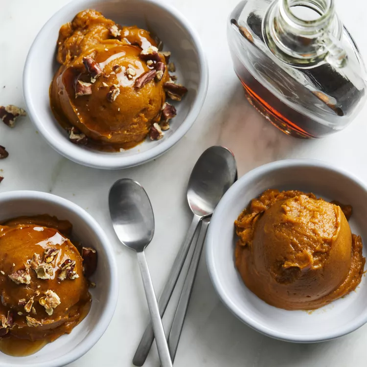

Pumpkin Pie Nice Cream
This easy and healthy dessert contains no added sugar, unless you use the optional maple syrup--which is a delicious touch. Add some chopped pecans to make it really special.
Preparation time
- Total: Approximately 20 minutes
- Preparation: 10 minutes
Ingredients
- 4 ripe medium bananas, peeled, halved and frozen
- 1 (15 ounce) can unseasoned pumpkin puree, chilled
- 1 ¼ teaspoon pumpkin pie spice (see Tip)
- 2 tablespoons pure maple syrup, plus more for garnish (Optional)
- Toasted chopped pecans for garnish
Instructions
- step1: Place bananas, pumpkin, pumpkin pie spice and maple syrup (if using) in a food processor; process until smooth.
- step2: Drizzle with additional maple syrup and garnish with pecans, if desired.
- step3(tip): You can find pumpkin pie spice with the other spices at the grocery store, or simply combine some pantry spices to make your own. To make your own, combine 1 Tbsp. ground cinnamon , 1 tsp. ground nutmeg, 1 tsp. ground ginger, 1/2 tsp. ground cloves and 1/2 tsp. ground allspice (optional) in a small bowl and use as directed.
Nutrition
The table below shows nutritional values per serving without the additional fillings.
| Calories | 72kcal |
|---|---|
| Carbs | 18g |
| Protein | 1g |
| Fat | 0g |